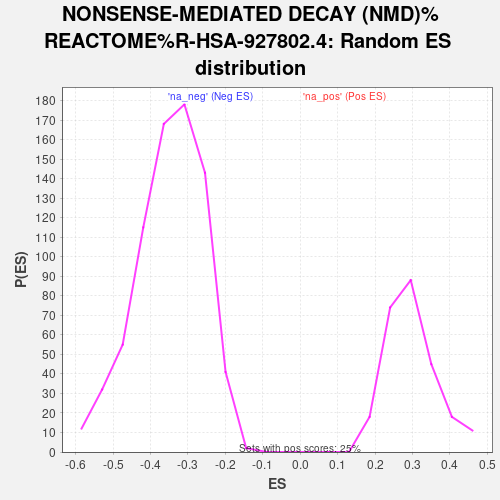

| | | Dataset | TNBC_vs_Healthy_ranks |
| Phenotype | NoPhenotypeAvailable |
| Upregulated in class | na_neg |
| GeneSet | NONSENSE-MEDIATED DECAY (NMD)%REACTOME%R-HSA-927802.4 |
| Enrichment Score (ES) | -0.65729797 |
| Normalized Enrichment Score (NES) | -1.887922 |
| Nominal p-value | 0.0 |
| FDR q-value | 0.009680584 |
| FWER p-Value | 0.159 |
Table: GSEA Results Summary
_REACTOME_R-HSA-927802.4_63.png) Fig 1: Enrichment plot: NONSENSE-MEDIATED DECAY (NMD)%REACTOME%R-HSA-927802.4
Fig 1: Enrichment plot: NONSENSE-MEDIATED DECAY (NMD)%REACTOME%R-HSA-927802.4
Profile of the Running ES Score & Positions of GeneSet Members on the Rank Ordered List
| SYMBOL | RANK IN GENE LIST | RANK METRIC SCORE | RUNNING ES | CORE ENRICHMENT | | 1 | MAGOH | 1192 | 0.096 | -0.3222 | No |
| 2 | UPF1 | 1492 | -0.025 | -0.4031 | No |
| 3 | ETF1 | 1602 | -0.066 | -0.4305 | No |
| 4 | UPF3A | 1762 | -0.140 | -0.4689 | No |
| 5 | PPP2CA | 1878 | -0.190 | -0.4935 | No |
| 6 | RPL17 | 2352 | -0.436 | -0.6072 | No |
| 7 | EIF4A3 | 2395 | -0.467 | -0.6019 | No |
| 8 | RPS4X | 2548 | -0.553 | -0.6237 | No |
| 9 | RPL10A | 2672 | -0.647 | -0.6342 | Yes |
| 10 | RPL26L1 | 2684 | -0.656 | -0.6137 | Yes |
| 11 | RPL39 | 2708 | -0.674 | -0.5958 | Yes |
| 12 | RPS23 | 2713 | -0.679 | -0.5726 | Yes |
| 13 | RPS26 | 2855 | -0.779 | -0.5833 | Yes |
| 14 | RPS29 | 2870 | -0.791 | -0.5588 | Yes |
| 15 | RPL21 | 2906 | -0.824 | -0.5389 | Yes |
| 16 | RPS18 | 2985 | -0.908 | -0.5277 | Yes |
| 17 | RPS8 | 3047 | -0.978 | -0.5093 | Yes |
| 18 | RPL41 | 3065 | -0.998 | -0.4783 | Yes |
| 19 | RPL37 | 3118 | -1.070 | -0.4542 | Yes |
| 20 | RPL23 | 3176 | -1.127 | -0.4294 | Yes |
| 21 | RPL23A | 3182 | -1.137 | -0.3901 | Yes |
| 22 | RPS10 | 3231 | -1.219 | -0.3596 | Yes |
| 23 | UPF2 | 3383 | -1.439 | -0.3493 | Yes |
| 24 | RPL11 | 3384 | -1.440 | -0.2978 | Yes |
| 25 | RPL3 | 3451 | -1.599 | -0.2586 | Yes |
| 26 | RPS24 | 3491 | -1.708 | -0.2081 | Yes |
| 27 | RPL36AL | 3497 | -1.728 | -0.1476 | Yes |
| 28 | RPL27 | 3514 | -1.774 | -0.0885 | Yes |
| 29 | RPS7 | 3523 | -1.807 | -0.0260 | Yes |
| 30 | RPS14 | 3571 | -1.987 | 0.0322 | Yes |
Table: GSEA details [plain text format]

Fig 2: NONSENSE-MEDIATED DECAY (NMD)%REACTOME%R-HSA-927802.4: Random ES distribution
Gene set null distribution of ES for NONSENSE-MEDIATED DECAY (NMD)%REACTOME%R-HSA-927802.4